By using our site, you agree to our use of cookies to deliver a better site experience.
Android Hacking
PART-2 : [Extended] How to set-up port-forwarding with NGROK
STEP 1 - Downloading NGROK
For this, just ahead over to ngrok's official website. On their website, you must click the 'SIGN UP ->' button on the top-right corner of the screen.
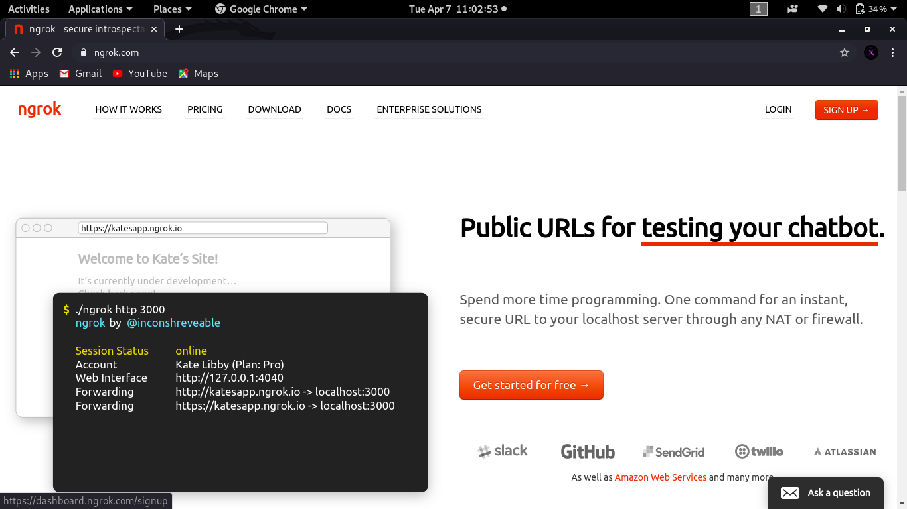
Once you click on sign up, your web browser will load a page which looks somewhat like this. Over here you need to fill up your details. For this tutorial I have created an account with fake details.
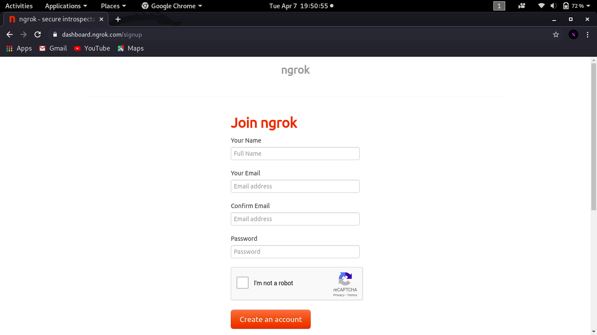
After filling up all the details, you must ensure that you have completed the captcha. After that is done you can click create an account.
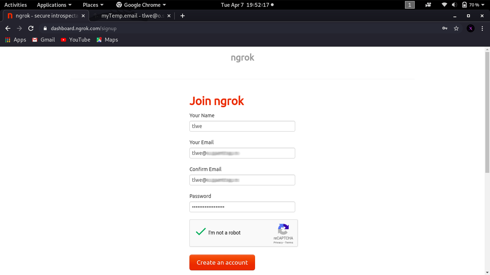
Once your account is created, this page will load up. Here you need to click 'Download for Linux' button.
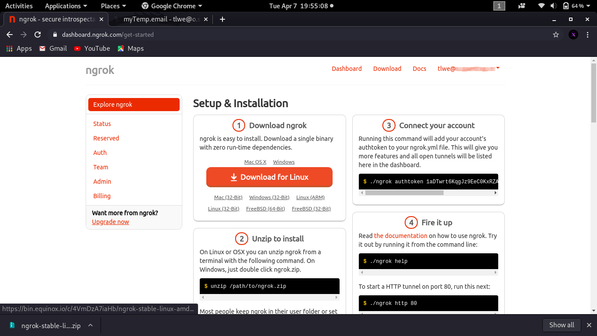
Once the download is complete, open a terminal session and change the directory to Downloads [ or any other path where you have downloaded this file ]. In that directory type :
unzip [FILE_NAME].zip
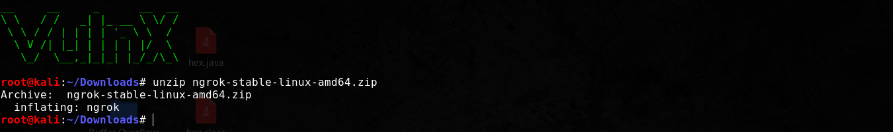
Once you have unzipped the file, now you need to add authtoken to ngrok.yaml file. Doing this will connect ngrok to your account and will enable you to use more features. To get your authtoken just go back to the ngrok page and copy the code from STEP-3 'Connect your account'
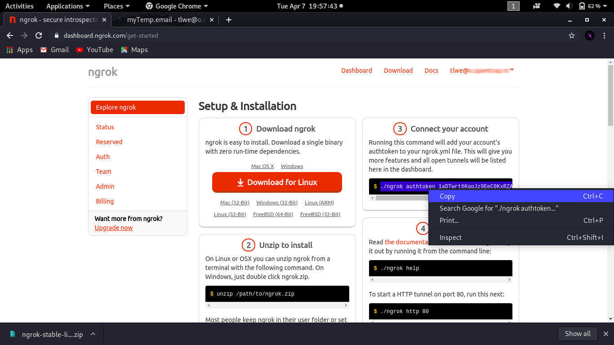
and then go back to your terminal and paste it there :-
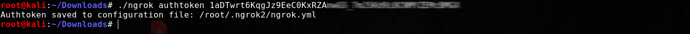
STEP 2 - Setting up NGROK
Now you need to move the 'ngrok' script file to the 'bin' directory of your computer. The 'bin' folder essentially contains all the binaries which you can execute from the command line by simply typing the script name instead of manually shuffling through the folders and then putting './' and executing the script. Of course this step is optional, but I recommend you to do this, as it is more convenient to directly type 'ngrok' to start the servers. So let's quickly shift the file now
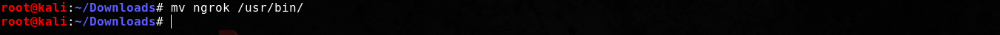
Now if you type 'ngrok' and hit enter, you can see the help menu of the script
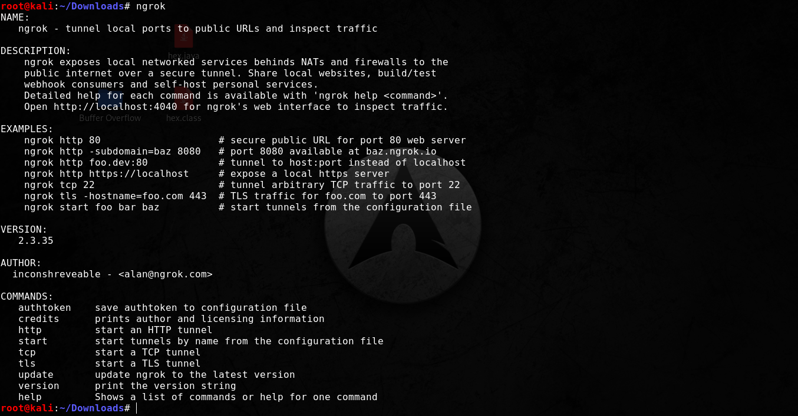
Now type 'ngrok http 80', you make your localhost public [ make sure that your apache2 server is up and running, if you aren't sure then it's better to restart it, use the following command : service apache2 restart ].

STEP 2 - Setting up NGROK
If you just wanted to understand how to download & install ngrok, then your work is done, you can exit this webpage now, however, if you came from this tutorial, and want to configure ngrok to suite the need of that tutorial, then you can continue reading further.So we need to run ngrok on two protocols, the first is HTTP to make our localhost fake apache2 page become publicly available to all external networks, and second is TCP in order to establish a 'reverse_tcp' connection. If you have taken the professional version of ngrok then you can skip this step and directly start two ngrok sessions, first with http at port 80, and second with tcp and port 1501. However if you chose to take the free version like me, then ngrok won't support the use of multiple tunnels at once, so what you can do is that you will need to configure the ngrok.yaml file. To do that open a terminal session and type the following command:
And then add the following lines,
tunnels:
first:
addr: 80
proto: http
second:
addr: 1501
proto: tcp
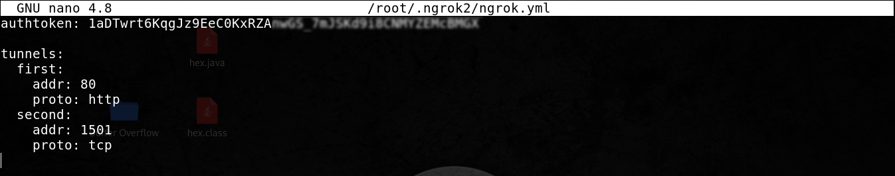
Now once that's over, you can type 'ngrok start --all' to start all ngrok tunnels at once.
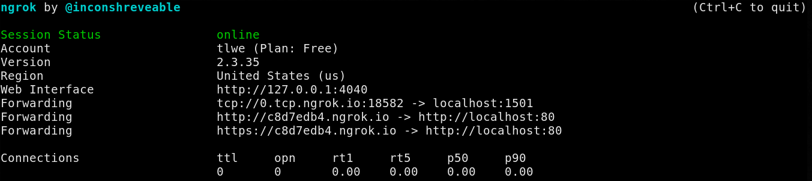
Alright so I hope you must successfully set-up ngrok account, as the process was quite simple. Now you can continue to read this page.
Good Luck,
Vulnx
Vulnx